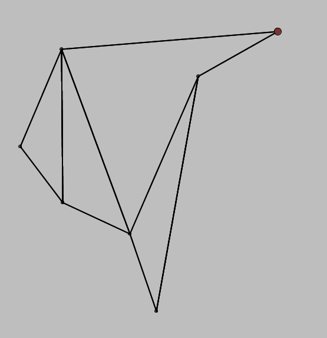

A Project by Christopher R. Wicks
for Computational Geometry
Rochester Institute of Technology
Fall 2016 Semester
View the Project on GitHub wickstopher/triangulation
To build and run the project from source, download the above .zip file or tarball and check out the README file. Prerequisites for building the project from include GNU Make, the Java 8 SDK, and Apache Maven.
You can also simply download a prebuilt executable JAR file of the application and run it in the usual way (Java 8 required).
The bulk of this project is in what I would consider to be a completed state. There are, however, a few things that are left to do. The polygon subdivision algorithm appears to be correct in all of the cases that I've tested, but there are a few cases for which the triangulation algorithm is incorrect. Despite multiple rewrites and intensive debugging sessions, I haven't quite picked up on the subtleties that I seem to be missing for these cases

Failed to add diagonal at second-to-last event point
Failed to add diagonal at third event point; erroneous diagonal at fourth event point
Additional work could be done to add extra visual information. I wanted to keep this project as simple as possible so that the core algorithms could be visually understood, but the way that the algorithm-processing data structures are set up is such that we can peek "under the hood", so to speak, at each stage of the algorithm if we so desire. Perhaps a more visually-inclined person than myself could pick this work up and figure out some additional interesting visualizations to add.